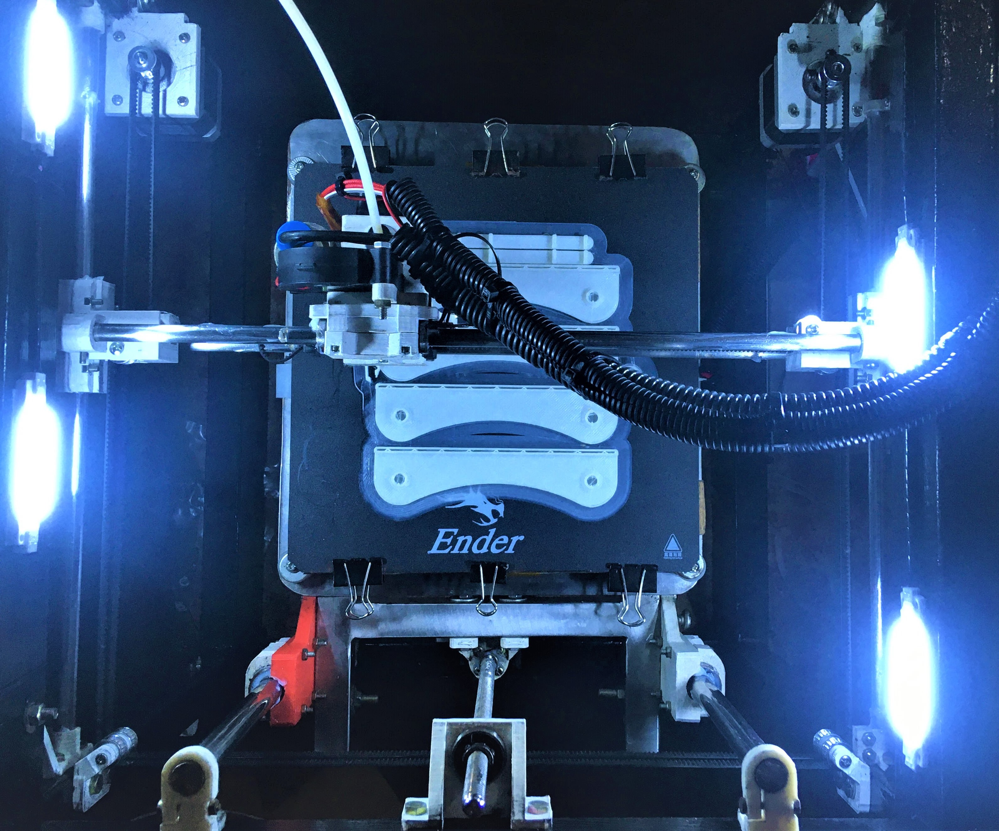
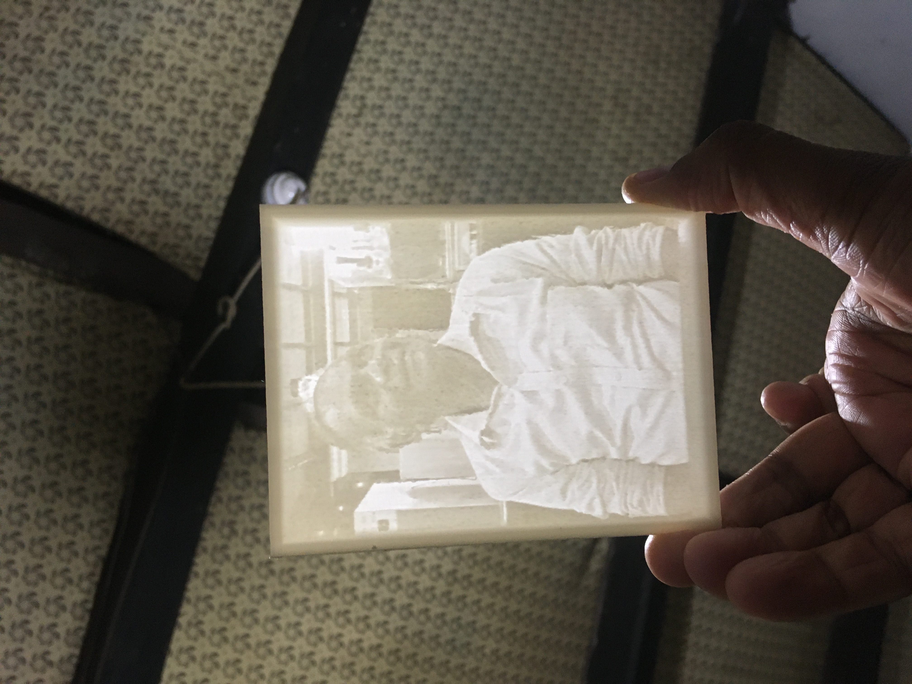
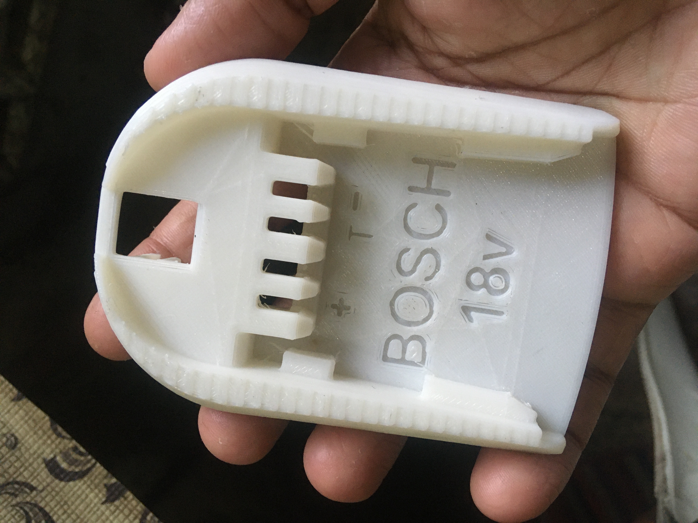
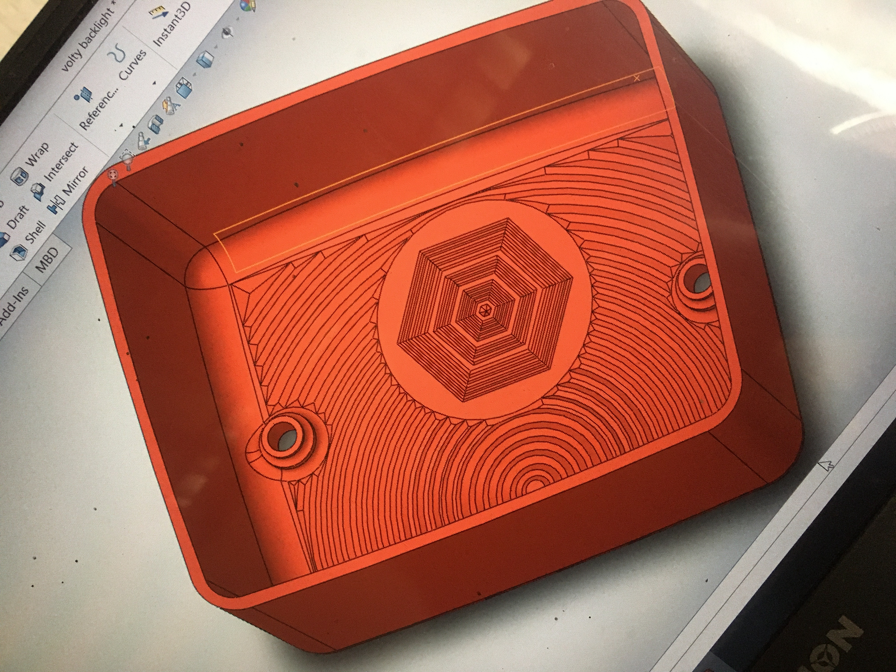
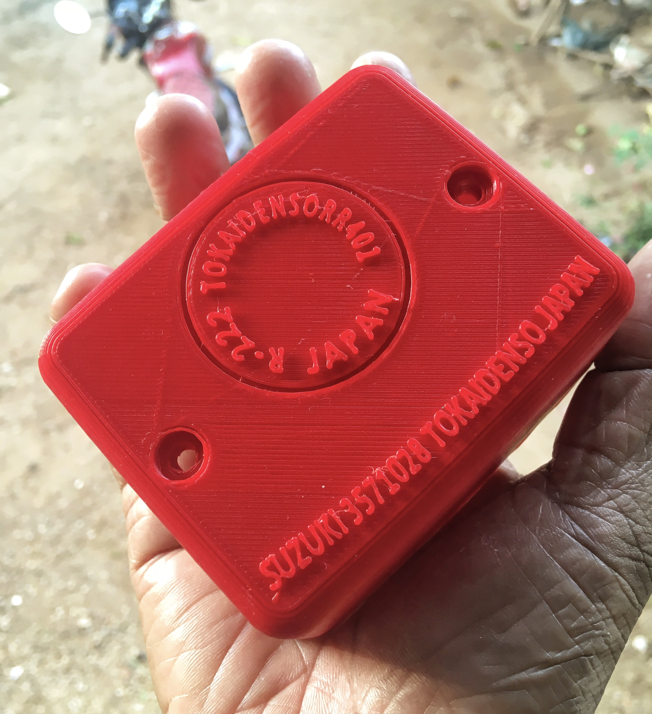
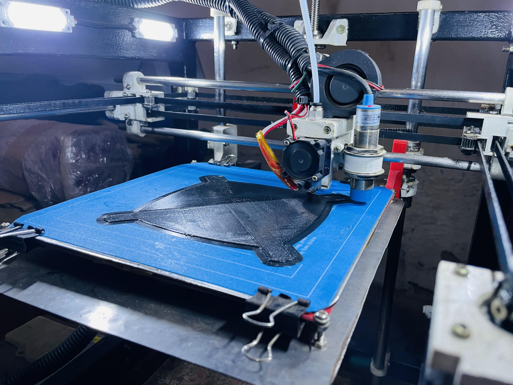

Beyond the Code
Leadership, cultural integration, and the maker mindset
VYROBA TECHS:
During the global pandemic, I identified a local shortage of high-precision manufacturing tools. I designed and built a custom CoreXY 3D Printer from scratch and launched a boutique manufacturing business.
- Product Engineering: Developed proprietary firmware and mechanical assemblies for high-speed printing.
- Market Impact: Fulfilled custom orders for engineering prototypes and functional parts during supply chain disruptions.
- Full-Stack Ownership: Managed everything from CAD design to customer relations and financial scaling.







Sports & Leadership
Active member of FC Amberg in Germany. Former Football Captain for my University team in Sri Lanka. Awarded the University Colors Award for Sports Excellence (2022), demonstrating teamwork and discipline.
Languages
Fluent in English (C1) and native in Sinhala. Actively pursuing German proficiency (B1 level) to effectively communicate and collaborate within local professional environments.
Engineering Philosophy
I bridge the gap between Mechanical Engineering and Industrial AI. My focus is building systems that don't just work in a notebook, but thrive on the factory floor.
Physics-Aware ML
Integrating physical constraints into Deep Learning to create robust, explainable models for complex mechanical systems.
Cyber-Physical Systems
Architecting Digital Twins that transform raw sensor data into real-time actionable intelligence for Industry 4.0.
Production-Ready AI
Prioritizing model robustness, low-latency execution, and reliability in unpredictable industrial environments.
Scalable Optimization
Moving beyond static solutions to build adaptive systems that continuously improve through real-world data feedback.